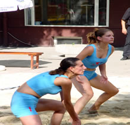

Volleyball is a team sport played by two teams on a playing court divided by a net.
The object of the game is for each team to send the ball regularly over the net to ground it on the opponent's court, and to prevent the ball from being grounded on its own court. The ball is put into play by the right back-row player who serves the ball by hitting it over the net to the opponent's court. A team is allowed to hit the ball three times to return it to the opponent's court. A player is not allowed to hit the ball twice consecutively, except when attempting a block. The rally continues until the ball touches the ground/floor, goes "out" or a team fails to return it to the opponent's court or commits a fault. The team winning a rally scores a point. When the receiving team wins a rally, it gains a point and the right to serve, and its players rotate one position clockwise. The best of three or best of five games will win matches. Each non-deciding game will be won by the team that first scores 25 points with a minimum two-point advantage. If there is a deciding game, it will be won by the team that first scores 15 points with a minimum two-point advantage.
For a person that is new to Beach Volleyball, maybe it is quite confusing. But as you progress a little bit, it is just a simple game that is fun and enjoyable, especially when you play with family or friends.
To know more about us, you can contact us directly and we will respond to you as soon as possible.